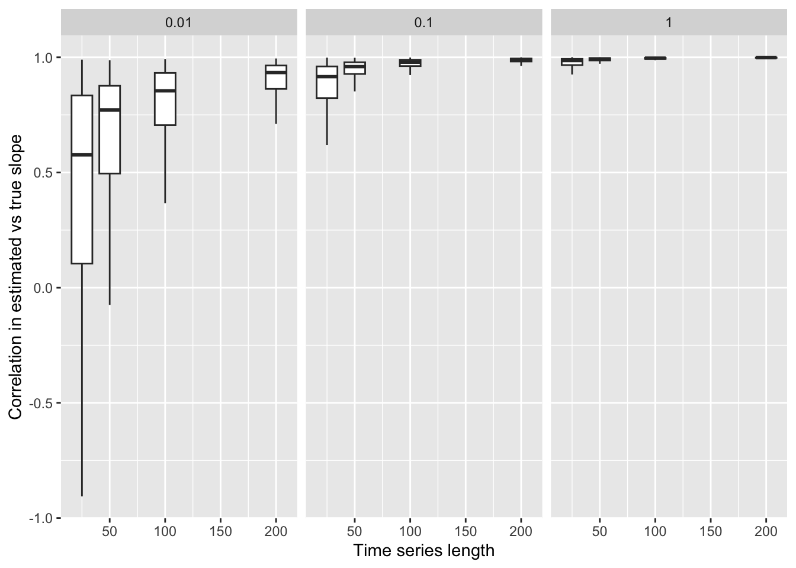
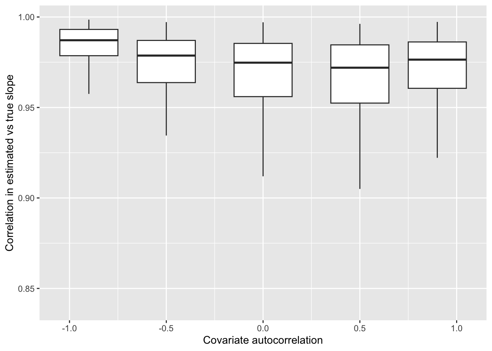
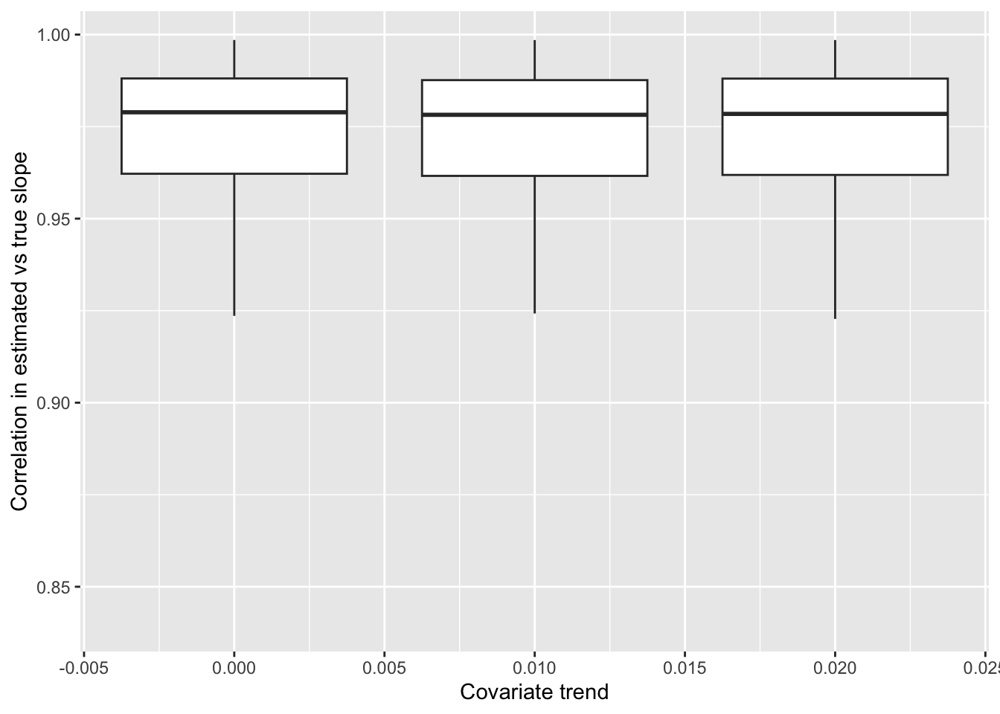

DLM simulations
Overview
The simulation code for this comparison is in ‘simulations.R’. As a brief overview, we are interested in understanding what factors contribute to models with time-varying slopes not performing well. All of these models are constructed using the MARSS R package, and we are only considering models with time-varying intercepts and slopes here.
Parameters
We investigated the following time series properties in these simulations:
Time series length - we compare time series with 25, 50, 100, and 200 time steps
Covariate time series autocorrelation - we investigated autocorrelation values of -0.9, -0.5, 0, 0.5, and 0.9. This autocorrelation represents the underlying autocorrelation in the covariate (driver or predictor) variable, not the autocorrelation in the random walk of the intercept or slope
Covariate trend - after imposing autocorrelation, we applied a linear trend in the covariate, using values of 0 (no trend), 0.01, and 0.02
Covariate variability - as most applications standardize covariate time series prior to model fitting, we fixed the standard deviation of the covariate time series at 1.0
Standard deviation of the random walk of the intercept parameter - we used a fixed value of 0.1, and only adjusted the standard deviation of the slope (below)
Standard deviation of the random walk of the slope parameter - we used values of 0.01, 0.1, and 1.0 to control the variability in the underlying slope. These values represent cases where the slope parameter has smaller, equal, and larger variability compared to the intercept.
Observation error variability - observation / measurement error was added to each simulated time series, and we fixed the standard deviation of this error at a small value (0.01)
Modeling
For each combination of parameters above, we generated 200 simulated time series (using fixed random number seeds). Random walks in the intercept, slope, and covariate time series were all simulated independently, and then combined to generate a latent response time series. Finally, measurement error was added to create observed time series.
For each simulated dataset, we used the MARSS package in R; for fast fitting we used the TMB estimation (method = “marssTMB”). We generated a number of summary statistics; because we are focused here on the ability to recover trends in the slope parameters, we focus here on the correlation between the estimated time-varying slope trend and true time-varying slope trend.
Results
Our results highlight that two parameters in our simulations are largely responsible for cases when DLMs are not able to recover underlying processes: time series length, and ratio of variability in the intercept versus slope.
Each facet here represents a different standard deviation of the random walk in the slope; as we fixed the standard deviation of the intercept random walk at 0.1, the standard deviation in the right facet represents a case where most of the variability is driven by variability in the slope. In contrast the leftmost facet represents a scenario where variability is dominated by the intercept. The results highlight that recovering a time-varying slope trend is very difficult in time series dominated by variability in the intercept, even when time series are long. More data (longer time series) generally increases the ability to recover trends in all cases, regardless of whether variability is dominated by the intercept or slope.
We see a weak effect of covariate autocorrelation; focusing on time series with 100 time steps and situations where variability in the intercept and slopes are equal (standard deviations = 0.1), covariate time series with strong negative autocorrelation result in a slight increase in the ability to recover underlying slope trends.

We also see little effect of a linear trend in the covariate; some of the scenarios explored here (such as the case with an autocorrelation of 0 above) include non-stationary trends, so this result is not surprising.
